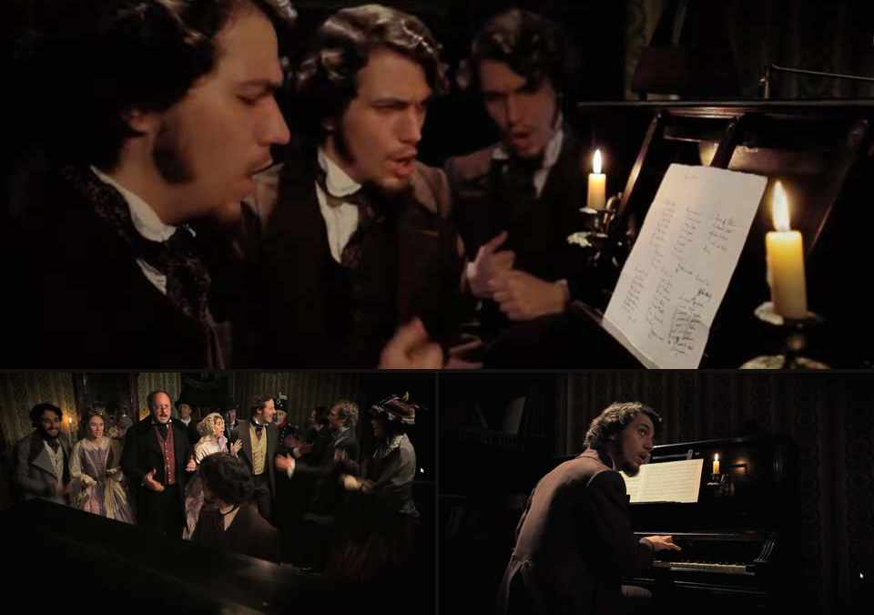

Dal punto di vista strettamente musicologico il panorama del Risorgimento è, naturalmente, molto più vasto di quello che incontrerete qui. Ci sarebbero Rossini, Bellini, Donizetti, Mercadante, Pacini, e poi inni e marce militari, musica sacra, repertori regionali, società filarmoniche, bande civiche, teatri, accademie e un’infinità di musicisti oggi quasi dimenticati. Raccontare tutto significherebbe scrivere una storia della musica italiana dell’Ottocento.
Ho scelto volutamente un’altra strada. Sono partito dall’inno e ho seguito intorno a esso musicisti spesso minori, poeti meno canonici, uomini e donne coinvolti nella febbre politica e rivoluzionaria, tipografi, editori, salotti, cori e bande. Non perché i grandi nomi siano meno importanti, ma perché proprio questo sottobosco permette di vedere la musica mentre esce dal teatro, passa nelle case e nelle strade, viene trascritta, imparata, gridata e diventa esperienza collettiva.
Il filo del percorso è dunque uno soltanto: come la musica contribuì a immaginare, comunicare e infine “fare” l’Italia.
Nel 1847 l’Italia politicamente ancora non esiste, eppure esiste già con sorprendente vitalità nelle poesie, nei giornali, nei teatri, nei salotti e soprattutto nelle canzoni. È l’anno in cui nascono quasi contemporaneamente La Coccarda, su versi di Giuseppe Bertoldi e musica di Luigi Felice Rossi, e Il Canto degli Italiani, scritto dal ventenne Goffredo Mameli a Genova e musicato a Torino da Michele Novaro.
Due composizioni politicamente non identiche: la prima legata a Carlo Alberto e al liberalismo monarchico sabaudo, la seconda alimentata dall’orizzonte mazziniano e unitario di Mameli. Eppure nascono nella stessa febbre culturale, a distanza di poche settimane e dentro ambienti che si intersecano continuamente.
La Coccarda viene pubblicata e cantata a Torino. Mameli scrive Il Canto degli Italiani; Novaro lo musica nello stesso anno.
Gli inni invadono piazze e salotti. Rossi e Novaro musicano entrambi versi di Bertoldi. Le rivoluzioni portano uomini e donne nelle strade.
Mameli combatte per la Repubblica Romana e muore a 21 anni dopo una ferita riportata durante i combattimenti.
Francesco Lucca pubblica Viva l’Italia!, tredici canzoni di Novaro, quasi tutte su versi di Dall’Ongaro.
Novaro torna a Bertoldi con La donna italiana, canzone per voce e pianoforte.
Verdi inserisce il tema del canto di Mameli-Novaro nell’Inno delle Nazioni, accanto a God Save the Queen e alla Marsigliese.
Verdi dirige a Milano la Messa da Requiem in memoria di Alessandro Manzoni.
Torino 1847: una città che canta
La Coccarda fu composta nel 1847 su versi di Giuseppe Bertoldi e musica di Luigi Felice Rossi. La coccarda è ancora quella azzurra sabauda, Carlo Alberto è chiamato direttamente in causa, ma il testo supera già il Piemonte con il verso: «Figli tutti d’Italia noi siamo».
Il canto nasce nel clima delle riforme carloalbertine. L’edizione musicale indica come prima esecuzione pubblica il 3 novembre 1847 a Torino, in occasione della partenza di Carlo Alberto per Genova. IMSLP lo descrive come popolarissimo e noto anche come «Marsigliese dei Piemontesi».
Non era l’inno ufficiale dello Stato sabaudo, funzione spettante alla Marcia Reale, ma un canto politico popolare capace di tenere insieme fedeltà dinastica, riformismo e nascente coscienza nazionale.
Quando Novaro riceve i versi di Mameli, Torino è già piena di inni. Nella casa di Lorenzo Valerio si faceva insieme musica e politica e si provavano al pianoforte i nuovi canti patriottici. Il Quirinale conserva proprio il racconto di Barrili secondo cui, mentre si eseguivano gli inni del momento, si arrivò al recentissimo «Coll’azzurra coccarda sul petto» di Bertoldi e Rossi.
È in questo ambiente che Ulisse Borzino, giunto da Genova, porta a Novaro il foglio con i versi di Mameli. Novaro legge, si commuove, accenna qualcosa al pianoforte e poi completa la musica a casa. Non siamo davanti a un compositore isolato che inventa un inno dal nulla, ma a un professionista del teatro immerso in una città nella quale gli inni «sbocciavano» ovunque.
L’officina degli inni: Bertoldi, Rossi, Novaro, Dall’Ongaro
Genova completa geograficamente la rete. È la città di Mameli e Novaro e, pochi anni dopo, dagli scogli di Quarto partirà la spedizione dei Mille: un altro luogo in cui musica, politica e costruzione nazionale finiscono per sovrapporsi.
Il vero anello di congiunzione fra Rossi e Novaro è Giuseppe Bertoldi. Nel 1848 i suoi versi vengono musicati ripetutamente anche da Novaro. Il caso più sorprendente riguarda l’Inno militare che comincia «Coraggio, coraggio, siam oggi soldati…»: lo stesso testo viene musicato sia da Luigi Felice Rossi sia da Michele Novaro.
Non abbiamo ancora una corrispondenza che autorizzi a definire Rossi e Novaro amici personali, ma è difficile considerarli figure isolate: stesso ambiente torinese, stesso poeta, persino lo stesso testo. Novaro musicò inoltre La Costituzione e Il nuovo anno, ancora di Bertoldi.
La collaborazione non si esaurisce nel 1848. Intorno al 1861, ormai nel momento dell’unificazione politica, ritroviamo Novaro su un altro componimento di Bertoldi: La donna italiana, pubblicato a Milano da Francesco Lucca come canzone con accompagnamento di pianoforte.
Nel frattempo la rete si allarga verso Milano. Con Francesco Dall’Ongaro, poeta, giornalista e patriota, Novaro costruisce un vero catalogo di canzoni politiche. L’album Viva l’Italia! raccoglie tredici brani e include La donna lombarda, che non va confusa con l’antichissima ballata popolare omonima.
Le donne del Risorgimento: dal salotto alle barricate
Non soltanto madri della patria. Eroine, organizzatrici, combattenti.
Giuridicamente le donne dell’Ottocento erano ancora lontanissime dall’emancipazione moderna. Ma raccontare il Risorgimento limitandole al salotto, alla beneficenza o alla funzione simbolica di madri e spose significherebbe amputarne una parte essenziale.
Nel 1848 la politica esce dai palazzi e invade le strade. E con la politica, in molti luoghi, escono anche le donne. Alcune raccolgono denaro e munizioni, altre organizzano ospedali, altre ancora imbracciano davvero il moschetto e salgono sulle barricate. La donna risorgimentale non è soltanto la Patria dipinta con la corona turrita: qualche volta è la persona che ti sta accanto dietro una barricata, con un fucile in mano.
Durante le Cinque Giornate di Milano del marzo 1848 si arma, indossa abiti maschili e combatte fin dalla prima barricata di Borgo Santa Croce. La memoria iconografica milanese la rappresenta con il fucile in mano e la fascia tricolore.
Segue il marito nelle campagne del 1848, combatte in uniforme e prende parte alla difesa della Repubblica Romana. Muore nel giugno 1849 durante l’assedio francese. Non è una metafora: è una combattente.
La sua biografia appartiene già a una dimensione transnazionale e militare. Attraversa guerre e rivoluzioni al fianco di Garibaldi e diventa uno dei rarissimi casi in cui la memoria monumentale italiana rappresenta una donna esplicitamente come eroina combattente.
Accanto a loro agiscono donne che combattono con altri strumenti. Cristina Trivulzio di Belgiojoso finanzia iniziative patriottiche, raccoglie volontari, fonda giornali e nel 1849 dirige gli ospedali militari della Repubblica Romana. Margaret Fuller, scrittrice e giornalista americana vicina a Mazzini, lavora nell’organizzazione dei soccorsi ai feriti. Clara Maffei fa del proprio salotto milanese un nodo della rete politica, letteraria e musicale che unisce patriottismo, stampa e teatro. La partecipazione femminile, dunque, non è una nota a margine: va dal giornale alla corsia d’ospedale, dal salotto alla barricata.
È in questo quadro che titoli come La donna italiana di Bertoldi e Novaro e La donna lombarda di Dall’Ongaro e Novaro acquistano un significato più interessante. La donna può ancora essere usata come allegoria morale della nazione, certo, ma quella figura allegorica convive ormai con donne reali che scrivono, organizzano, finanziano, curano, disobbediscono e combattono.
Le donne di Verdi, nella vita e sulla scena
Il passaggio a Verdi può essere appena accennato, ma è troppo significativo per ignorarlo. Nella sua vita privata troviamo figure femminili decisive e assai diverse tra loro: Margherita Barezzi, la prima moglie, morta giovanissima; Giuseppina Strepponi, cantante, compagna e poi moglie, donna colta, indipendente e tutt’altro che facilmente riconducibile alle convenzioni sociali del tempo; Teresa Stolz, grande interprete verdiana e presenza importante negli anni maturi del compositore.
Ma ancora più interessante, per il discorso che stiamo seguendo, è il teatro. Violetta, Gilda, Leonora, Azucena, Amelia, Lady Macbeth, Aida, Desdemona non sono semplicemente figure femminili collocate accanto a protagonisti maschili: spesso sono il luogo nel quale l’opera concentra lingua, sentimento, sacrificio, colpa, desiderio, memoria, potere e violenza sociale. In molti casi risultano drammaticamente più complesse degli uomini che le circondano.
Se l’opera ottocentesca contribuì davvero a far circolare una lingua comune, una parte enorme di quella lingua passò dunque attraverso voci femminili. E questo ci riporta esattamente al punto dal quale eravamo partiti: la musica come macchina di diffusione, memoria e appartenenza collettiva.
Mameli: le parole prima della musica
Prima di chiedere come Novaro trasformò quei versi in un canto collettivo, conviene fermarsi sulle parole e sul ragazzo che le scrisse.
Prima della musica: che testo è Il Canto degli Italiani?
Se per qualche minuto separiamo le parole di Mameli dalla musica di Novaro, emerge un testo che non va giudicato come una lirica intimista né come una poesia costruita per la lettura silenziosa. Mameli ha vent’anni, scrive nell’autunno del 1847 e si rivolge a un’Italia che politicamente non esiste ancora. Il suo problema non è contemplare il mondo: è creare un “noi”. Per questo la prima parola, Fratelli, è già quasi un programma politico.
Il testo è composto da cinque strofe, costruite prevalentemente su senari dal ritmo rapido e incalzante, seguite dal ritornello. La lingua è enfatica, piena di apostrofi, richiami storici, immagini militari e formule memorabili. Non cerca la sottigliezza psicologica: cerca la riconoscibilità, l’urgenza e soprattutto la possibilità di essere ricordata e ripetuta da molti.
È facile vedere anche i limiti del testo. Le immagini sono spesso giustapposte più che sviluppate, l’accumulo di riferimenti storici può sembrare quasi un elenco, la retorica è continuamente spinta verso l’iperbole. Se lo mettessimo accanto a Leopardi o Foscolo chiedendogli la stessa cosa, il confronto sarebbe poco sensato prima ancora che impietoso. Ma Il Canto degli Italiani appartiene a un altro genere: è poesia di mobilitazione, più vicina alla coralità civile del Manzoni dell’Adelchi che alla lirica individuale.
Ed è proprio qui che il testo mostra la sua forza. I senari corrono, le parole-chiave sono semplici, il “noi” domina sull’“io”, gli exempla storici trasformano il passato in una riserva di identità. La frase più riuscita, forse, non è neppure una metafora: «Perché non siam popolo, perché siam divisi». È una diagnosi politica messa in versi.
Insomma, non è necessario trasformare Mameli in un grande poeta che non fu. Il punto è un altro: scrisse un testo capace di uscire immediatamente dalla pagina, diventare voce collettiva e sopravvivere al proprio autore. Il valore del testo non sta dunque nella sua “purezza” letteraria, ma nella sua capacità di agire nella storia.
Non serve essere Leopardi per entrare nella storia. A volte basta trovare, nel momento giusto, parole che una comunità sia capace di riconoscere come proprie.
Mameli poté godere pochissimo del successo delle proprie parole. Nel 1848 combatté volontario in Lombardia; nel 1849 seguì Garibaldi e partecipò alla difesa della Repubblica Romana contro l’intervento francese. Il 3 giugno fu gravemente ferito alla gamba; sopraggiunse un’infezione e morì il 6 luglio 1849, a 21 anni. Mentre l’Italia cominciava a cantare le sue parole, il loro autore moriva combattendo per il progetto politico al quale le aveva affidate.
Un inno poteva anche nascere diverso
I versi di Mameli non furono musicati soltanto da Novaro. Fra coloro che provarono a dar loro una veste musicale troviamo Alessandro Botti, tipografo e musicista dilettante. La Biblioteca Universitaria di Genova conserva la sua partitura, dedicata alla Guardia Civica.
Oggi possiamo anche ascoltarla. Nel cortometraggio storico-musicale diretto da Maurizio Benedetti, poi trasmesso dalla RAI, le prime soluzioni musicali sono accompagnate da eloquenti espressioni degli attori: la proposta di Botti viene cinematograficamente, diciamo così, “schifata”. Le smorfie sono regia, non prova storica, ma il confronto fra le due versioni resta illuminante.
La versione di Botti possiede cantabilità, ma il rapporto fra accento verbale, scansione del verso e costruzione musicale appare meno incisivo. Novaro trova invece una forma capace di trasformare il testo in gesto collettivo.
La fortuna fu quasi immediata. Il Governo ricorda che, dopo i moti del 1848, il canto veniva eseguito dalle bande e dai soldati in partenza per la Lombardia e divenne in breve uno dei canti più amati del Risorgimento.
Fare gli italiani: lingua, musica, cittadinanza
Quando la musica era la musica
Per capire il peso che poteva avere un canto come questo bisogna fare uno sforzo di immedesimazione storica. Quel mondo non è remotissimo da noi nel tempo, ma lo è nel modo in cui la musica veniva ascoltata, imparata e trasmessa. L’Italia politica non esisteva ancora e, insieme agli italiani, si stava formando anche una lingua comune: non soltanto nei libri o negli atti amministrativi, ma nei teatri, nelle arie d’opera, negli inni, nelle trascrizioni per banda, nei cori di chiesa e nelle società musicali diffuse nei paesi.
Quell’italiano lirico che oggi può sembrarci enfatico o artificioso era uno dei modi attraverso cui una lingua sovraregionale entrava nelle orecchie di popolazioni che parlavano soprattutto dialetti e idiomi locali. Le arie dei grandi autori, le canzoni dei compositori minori e i cori adattati per bande e cantorie non erano repertori separati: circolavano, cambiavano forma e costruivano un paesaggio sonoro condiviso.
Questo valeva non soltanto nei grandi teatri. Le bande municipali, le cantorie parrocchiali, i dilettanti e le associazioni musicali portavano quelle melodie in luoghi nei quali l’opera non sarebbe mai arrivata nella sua forma originale. La trascrizione non era quindi un semplice ripiego: era uno dei principali mezzi di diffusione.
Non esistevano radio, dischi, televisione, telefoni capaci di riprodurre musica, registrazioni o streaming. La musica arrivava soltanto se qualcuno la suonava o la cantava: passava dal teatro alla piazza, dalla banda alla chiesa, dalle case alle feste pubbliche. Un’aria poteva sopravvivere ben oltre la rappresentazione dalla quale proveniva proprio perché qualcuno l’aveva trascritta, adattata e fatta propria. In quel mondo, per molti italiani, la banda del paese, il coro, la chiesa e il teatro erano davvero i mezzi di comunicazione musicale.
Per questo una melodia capace di viaggiare da una città all’altra poteva contribuire a costruire memoria, lingua, appartenenza e immaginario politico. Il confronto con il presente non serve a rimpiangere un’età musicale migliore: serve a capire perché, in quel mondo, la circolazione della musica poteva avere un peso sociale e politico enorme.
Il 1848: si fanno gli italiani
E mentre questa lingua nuova, o almeno questa nuova lingua comune, passa attraverso il teatro, le bande, i cori, gli inni e quelle melodie che ormai cominciano a essere riconoscibili da Genova a Torino, da Milano a Firenze, accade qualcosa di altrettanto importante sul piano politico. Perché fra il 1847 e il 1848 non si stanno semplicemente scrivendo canzoni patriottiche, si stanno facendo gli italiani, e per farli non basta ancora dare loro una lingua o una musica nella quale riconoscersi. Bisogna cominciare anche a trasformarli, molto lentamente e con tutte le contraddizioni del caso, da sudditi in cittadini.
Carlo Alberto, che rivoluzionario non era e che lo Statuto non lo concede certo per improvvisa folgorazione democratica, comprende però che il vecchio edificio della monarchia assoluta non può più rimanere completamente immobile. Il 4 marzo 1848 promulga così lo Statuto Albertino, una carta ancora concessa dal sovrano, ancora fortemente monarchica, ancora lontanissima dall'idea moderna di sovranità popolare, ma capace tuttavia di introdurre rappresentanza, Parlamento e limiti costituzionali entro uno Stato che fino a poco prima ne era privo.
Ed è difficile non vedere la continuità profonda fra questi fenomeni, perché mentre Mameli scrive "Fratelli d'Italia", mentre Novaro mette quelle parole in musica e le rende cantabili da molti, mentre le bande e i teatri contribuiscono a far circolare una lingua che ancora una larga parte della popolazione non usa quotidianamente, la politica comincia contemporaneamente a costruire uno spazio nel quale quegli stessi italiani possano essere rappresentati.
Non sono ancora cittadini nel senso che attribuiremo alla parola un secolo dopo. Non votano tutti, le donne sono escluse, il Re conserva poteri enormi e il Senato è di nomina regia. Eppure qualcosa è cominciato. Quello Statuto, emanato per il Regno di Sardegna e destinato poi a diventare la carta costituzionale del Regno d'Italia, resterà il quadro giuridico dello Stato fino all'avvento della Costituzione repubblicana.
In questo senso il Risorgimento non è soltanto la storia di guerre, monarchi e diplomatici. È anche, e forse soprattutto, un gigantesco laboratorio nel quale vengono costruiti contemporaneamente una lingua, un repertorio simbolico, un immaginario collettivo e, molto lentamente, una cittadinanza.
La musica, in tutto questo, non accompagna semplicemente il processo.
Ne è uno degli strumenti.
Manzoni e Verdi: una nazione prima dello Stato
Questa costruzione non passa soltanto attraverso gli inni. Due dei grandi protagonisti della cultura ottocentesca italiana, Alessandro Manzoni e Giuseppe Verdi, contribuiscono in modo diverso a creare, prima ancora dello Stato, qualcosa che gli assomiglia: una comunità capace di riconoscersi in una lingua, in alcune storie e soprattutto in alcune emozioni condivise. In altre parole, cominciano a fare gli italiani quando l’Italia politica non è ancora fatta.
Manzoni lo fa anzitutto attraverso la lingua. Il lunghissimo lavoro sui Promessi sposi conduce alla ricerca di un italiano vivo e comprensibile oltre i confini regionali; il romanzo diventerà per questo uno dei grandi modelli dell’italiano nazionale. Ma non c’è soltanto la lingua. Nel Seicento lombardo dominato dagli Spagnoli, Renzo e Lucia attraversano soprusi, guerra, carestia, peste e violenza dei potenti senza smettere di cercare una giustizia possibile. Sarebbe troppo semplice dire che gli Spagnoli “sono” gli Austriaci sotto mentite spoglie, ma per un lettore lombardo dell’Ottocento, immerso in un’altra dominazione straniera, quelle pagine potevano inevitabilmente produrre risonanze contemporanee.
Lo stesso problema appare ancora più scopertamente nell’Adelchi. Nel coro Dagli atrii muscosi il popolo latino è un «volgo disperso che nome non ha», spettatore impotente della guerra fra dominatori longobardi e franchi: non è ancora un popolo proprio perché non possiede una propria identità politica. In Marzo 1821, invece, quel popolo sembra finalmente immaginabile come nazione: un’Italia «una d’arme, di lingua, d’altare, di memorie, di sangue e di cor». Fra i due testi passa quasi un programma intero del Risorgimento: dal popolo che non ha nome al popolo che può finalmente pronunciare il proprio.
Verdi compie qualcosa di analogo con il teatro musicale, ma qui occorre distinguere la ricezione storica dalla memoria successiva. Nel Nabucco del 1842 il coro degli Ebrei esiliati che ricordano la patria perduta non nasce come manifesto politico in codice, e la celebre immagine di Va’, pensiero come grande “inno del Risorgimento” è stata in larga parte costruita e rafforzata dopo quei primi anni. Roger Parker ha mostrato come la politicizzazione sistematica delle opere verdiane anteriori al 1848 si consolidi soprattutto più tardi, dalla fine degli anni Cinquanta e poi nella memoria nazionale. Ciò non toglie che temi di esilio, patria perduta e appartenenza potessero prestarsi a letture politiche. L’anno seguente, nei Lombardi alla prima crociata, O Signore, dal tetto natio offre un analogo repertorio emotivo.
Poi arriva il 1849 e la metafora quasi non serve più. La battaglia di Legnano, rappresentata nella Roma repubblicana, è l’opera verdiana più dichiaratamente patriottica: si apre con «Viva Italia!» e porta sulla scena la Lega lombarda, il giuramento, il combattimento e il sacrificio dell’eroe. Nello stesso 1848 Verdi, su richiesta di Mazzini, aveva già musicato il Suona la tromba di Mameli. Qui il melodramma non si limita più a poter essere letto politicamente: entra direttamente dentro la mobilitazione nazionale.
Più tardi, ormai oltre il cuore cronologico del Risorgimento, anche Aida riproporrà in altra forma il conflitto fra amore e appartenenza: Aida è lacerata fra Radamès e il proprio popolo etiope. Il suo sacrificio finale non “salva” politicamente il suo popolo, ma rende ancora una volta tragico e concretissimo il prezzo dello scontro fra sentimento privato, fedeltà e patria.
Novaro e il paradosso dell’Inno italiano
Tolto per un momento il peso simbolico accumulato in quasi due secoli, il Canto degli Italiani appare per ciò che è musicalmente: una pagina semplice di un professionista del teatro, non l’opera di un grande compositore dimenticato.
Il materiale melodico è elementare, l’armonia procede attraverso formule comuni e l’elaborazione tematica resta povera se la si misura con i grandi modelli strumentali o operistici del secolo. Non occorre demolire Novaro, ma neppure trasformarlo retrospettivamente in un genio misconosciuto. Nel 1994 Ennio Morricone espresse un giudizio ancora più severo, definendo molto brutto il tema e paragonandone l’effetto a quello di una modesta banda di paese. È un giudizio estetico, deliberatamente tagliente, che coglie la povertà del materiale ma non misura la funzione storica del brano.
Ed è proprio qui il punto. Il Canto degli Italiani non nasce come pagina da ascolto contemplativo, né come luogo nel quale il compositore debba mostrare complessità formale o raffinatezza contrappuntistica. Novaro non doveva scrivere un quartetto di Beethoven: doveva scrivere qualcosa che migliaia di persone potessero imparare, ricordare e gridare insieme. Semplicità e prevedibilità, limiti evidenti sul piano dell’invenzione, diventano allora anche strumenti di diffusione.
Va inoltre distinta la partitura originaria dall’immagine sonora che ne abbiamo oggi. Le esecuzioni cerimoniali per banda o grande orchestra tendono a irrigidire il profilo ritmico; la fonte per voci maschili e pianoforte lascia invece percepire meglio il carattere teatrale e la progressiva trasformazione del gesto individuale in risposta collettiva.
Prima della banda: la partitura originale
Il Canto degli Italiani che ascoltiamo nelle cerimonie ufficiali, eseguito da grande banda o orchestra, non coincide con l’organico originario. La fonte di Novaro è per voci maschili e pianoforte; nella parte più mossa la scrittura diventa corale a tre voci. Quello che oggi chiamiamo “suono dell’inno” è dunque anche il risultato di orchestrazioni e strumentazioni successive.
Una piccola scena teatrale
Novaro era cantante e maestro dei cori: ragionava con la grammatica del melodramma. Nella forma originaria l’Inno somiglia meno a una marcia rigida che a una breve scena, nella quale un gesto inizialmente declamatorio passa dalla voce individuale alla risposta collettiva.
Questa origine teatrale conta molto. L’ascoltatore ottocentesco riconosceva immediatamente certi gesti: il richiamo iniziale, la risposta corale, il passaggio momentaneo nel minore, l’accumulo di tensione, il crescendo e la stretta. Novaro non inventa una lingua nuova: adopera con abilità una lingua che il pubblico conosce già.

L’attacco usa note ribattute, ritmo netto e frasi brevi: il testo deve entrare subito nell’orecchio. Poi la musica cambia carattere, attraversa maggiore e minore, accumula energia, accelera e prepara il ritornello. Crescendo, ripetizione e stretta finale appartengono al lessico teatrale comune dell’epoca.
È una scrittura povera di materiali ma molto chiara nelle funzioni. La melodia non chiede di essere contemplata: deve legarsi alle parole, farsi ricordare in fretta e rendere percepibile la direzione del discorso anche a chi non possiede alcuna educazione musicale.
Per questo parlare di “citazioni” o cercare un plagio in poche battute rischia di mancare il bersaglio. La parentela principale è con un linguaggio condiviso, non con una singola composizione. Il teatro musicale dell’Ottocento viveva anche di convenzioni: la qualità non consisteva necessariamente nell’inventare ogni volta un nuovo vocabolario, ma nel collocare formule note nel momento giusto e farle funzionare.
Qui il meccanismo è chiarissimo: l’eroe proclama, il popolo risponde, la tensione cresce e la collettività finisce per riconoscersi in un’unica voce. Lo «Stringiamci a coorte» funziona quasi come una cabaletta collettiva; l’ultimo «Sì!», aggiunto da Novaro e assente nel testo di Mameli, chiude la scena. In questo senso l’Inno è davvero teatro musicale applicato alla piazza.
Perché funziona
La domanda decisiva non è più se il tema sia bello o l’armonia raffinata, ma perché proprio questa musica sia riuscita a sopravvivere e a diffondersi. Una prima risposta sta nella memoria: il rapporto fra parola e ritmo è immediato, le frasi sono chiare, le ripetizioni aiutano a orientarsi e la progressione del ritornello rende evidente dove la musica sta andando. La prevedibilità, limite estetico in altri contesti, qui diventa una risorsa comunicativa.
Un’altra risposta sta nella sua robustezza. Un canto collettivo deve funzionare anche con folle, cori improvvisati e bande non perfette. Deve continuare a essere riconoscibile quando mancano quasi tutte le condizioni che rendono possibile una buona esecuzione. Il Canto degli Italiani può essere accelerato, rallentato, irrigidito o persino suonato male senza perdere facilmente la propria identità.
Per un brano destinato alla piazza non è una qualità secondaria. Anzi, questa tolleranza all’imperfezione potrebbe essere una delle ragioni concrete della sua sopravvivenza: la musica regge anche quando l’esecuzione la semplifica o la trasforma.
È importante anche la sua adattabilità. L’organico originario, le successive versioni corali, le trascrizioni per banda e le orchestrazioni moderne possono cambiare il colore del brano senza cancellarne il profilo. Questa elasticità aiuta a spiegare perché l’Inno abbia potuto attraversare ambienti molto diversi: il salotto, la piazza, la caserma, la scuola, la cerimonia ufficiale.
Il giudizio su Novaro deve quindi evitare due errori opposti: trasformare la fortuna storica dell’Inno in grandezza compositiva, oppure considerare quella fortuna un puro accidente. La partitura possiede caratteristiche concrete che ne favoriscono la diffusione: semplicità, chiarezza, adattabilità, corrispondenza fra parola e ritmo e una progressione drammatica che porta dall’enunciazione individuale alla voce comune.
Naturalmente nessuna analisi musicale basta, da sola, a spiegare una fortuna nazionale durata così a lungo. Contano la storia politica, le occasioni pubbliche, le guerre, la memoria del Risorgimento e, più tardi, l’adozione repubblicana. Ma il contesto storico incontra una musica che gli offre un oggetto particolarmente facile da trasmettere. Il successo non è dunque né soltanto “merito” della partitura né soltanto accidente: nasce dall’incontro fra forma musicale e circostanze storiche.
Non è grande musica nel senso delle grandi pagine dell’Ottocento. È però musica costruita con notevole intelligenza rispetto alla propria funzione. Novaro inventa poco, ma capisce molto bene come si costruisce un gesto collettivo e come una lingua musicale già familiare al pubblico possa trasformarsi in una lingua comune anche sul piano simbolico.
È forse questo il punto che un giudizio puramente estetico rischia di perdere. Una pagina può essere modesta per invenzione e, nello stesso tempo, estremamente efficace rispetto al proprio uso. Nel caso di Novaro le due cose convivono senza bisogno di trasformare il compositore in ciò che non fu.
Il paradosso è tutto qui: non contiene molta musica, ma contiene esattamente quella che gli serviva.
Da “provvisorio” a inno nazionale: 1946, 2017, 2025
La fortuna storica del canto precede di molto la sua sistemazione giuridica. Il 12 ottobre 1946 il Consiglio dei ministri presieduto da Alcide De Gasperi stabilì che, per il giuramento delle Forze Armate alla nuova Repubblica, si adottasse «provvisoriamente» l’Inno di Mameli. Quella provvisorietà sarebbe durata oltre settant’anni.
Solo con la legge 4 dicembre 2017, n. 181 la Repubblica riconobbe formalmente il testo del Canto degli Italiani di Goffredo Mameli e lo spartito musicale originale di Michele Novaro quale proprio inno nazionale. Nel 2025 un decreto del Presidente della Repubblica ha poi disciplinato le modalità di esecuzione. È una conclusione quasi ironica per la nostra storia: un canto nato nel 1847 fuori da qualunque Stato italiano unitario diventa definitivamente simbolo giuridico della Repubblica centosettant’anni dopo.
Alessandro Zilli
Verdi: dal melodramma alla nazione
E dietro tutto questo si avverte inevitabilmente Giuseppe Verdi. Quando Novaro scrive nel 1847, il pubblico ha già ascoltato Nabucco, I Lombardi alla prima crociata, Ernani, Attila e Macbeth. Parlare di “plagio” sarebbe improprio; più corretto dire che Novaro parla una lingua musicale che Verdi aveva contribuito potentemente a rendere familiare.
Mameli, Verdi e un secondo inno
Lo dimostra, peraltro, la storia stessa del brano. Quando Mazzini, non pienamente soddisfatto del carattere del Canto degli Italiani, volle tentare nuovamente la strada dell'inno patriottico, affidò ancora una volta il testo a Mameli e la musica, questa volta, a Giuseppe Verdi. Nacque così Suona la tromba e, sulla carta, il confronto avrebbe dovuto essere quasi imbarazzante, perché da una parte c'erano Mameli e Novaro, dall'altra Mameli e Verdi.
Se la fortuna di un canto politico dipendesse dalla qualità del compositore che lo firma, il problema sarebbe stato risolto prima ancora di cominciare.
E invece non accadde nulla del genere.
Il canto di Novaro sopravvisse, si diffuse e finì per radicarsi nella memoria collettiva con una forza che quello di Verdi non possedette mai. Il paradosso diventa ancora più significativo quando, alcuni anni dopo, proprio Verdi, componendo l'Inno delle Nazioni, dovette scegliere un tema che potesse rappresentare musicalmente l'Italia accanto a God Save the Queen e alla Marsigliese. Anziché ricorrere alla Marcia Reale, che pure era l'inno ufficiale dello Stato unitario, inserì proprio il Canto degli Italiani.
L'episodio è particolarmente istruttivo perché mostra come, indipendentemente dal valore assoluto della musica, il brano di Novaro avesse già acquisito ciò che nessuna commissione, nessun decreto e nessun giudizio critico può produrre artificialmente, cioè il riconoscimento collettivo.
Viva V.E.R.D.I.: quando un nome diventa uno slogan
Nel 1859 il nome di Verdi acquista anche una seconda vita politica. La scritta «Viva VERDI», documentata sui muri e nelle manifestazioni di quell’anno, poteva essere letta contemporaneamente come omaggio al compositore e come acronimo di «Viva Vittorio Emanuele Re D’Italia». Non bisogna dedurne che ogni coro verdiano fosse stato scritto come messaggio cifrato patriottico, perché una parte dell’immagine di Verdi come “cantore del Risorgimento” verrà rafforzata anche dopo l’Unità. Ma proprio questa ambiguità rende il caso straordinario: un cognome celeberrimo diventa abbastanza condiviso da funzionare come parola d’ordine politica.
Il Va’ pensiero torna a sfidare Mameli
La contesa fra musica, memoria e identità non si chiude nell’Ottocento. Nell’agosto 2009 Umberto Bossi contrappose pubblicamente il Va’ pensiero all’Inno di Mameli, sostenendo che molte più persone conoscessero il coro verdiano e definendolo «il nostro inno». Non si trattò dell’approvazione di una legge che sostituiva l’inno nazionale, ma di una polemica politica assai significativa, registrata anche negli atti parlamentari. Il paradosso è notevole: proprio la pagina verdiana che nel tempo era stata caricata di significati patriottici veniva ora utilizzata per contestare uno dei simboli dell’unità nazionale.
Il caso ci aiuta a non trattare gli inni come oggetti immobili. Una musica può cambiare significato a seconda di chi la canta, del luogo nel quale risuona e della comunità che decide di riconoscervisi. Il Va’ pensiero, coro degli esuli ebrei del Nabucco, è diventato nel tempo preghiera civile, mito risorgimentale, canto funebre, simbolo politico e proposta identitaria. La storia della ricezione è parte della storia della musica.
Il gigante dentro l’officina
Verdi entra anche nelle istituzioni: nel 1861 viene eletto al primo Parlamento italiano. Alessandro Manzoni era stato nominato senatore l’anno precedente. I due non furono amici di frequentazione quotidiana, ma Verdi nutrì per Manzoni un’ammirazione quasi reverenziale. Alla morte dello scrittore, nel 1873, gli dedicò la Messa da Requiem, diretta a Milano il 22 maggio 1874.
Anche il fallimento appartiene a questa officina. Non Rigoletto, che fu accolto con entusiasmo nonostante la battaglia con la censura, ma la prima della Traviata del 1853: un fiasco, prima della definitiva affermazione l’anno seguente. Successo, insuccesso, censura, nuove versioni, ripensamenti: la cultura nazionale nasce anche da tentativi che non funzionano subito.
Dietro i giganti: l’officina culturale del Risorgimento
La storia culturale del Risorgimento viene inevitabilmente raccontata attraverso alcuni giganti: Mazzini, Garibaldi, Cavour, Manzoni, Verdi. Ma questi uomini non lavoravano nel vuoto.
Dietro di loro esisteva un substrato artistico, intellettuale, editoriale e politico impressionante. Musicisti professionisti e dilettanti, poeti oggi dimenticati, donne che organizzavano salotti o combattevano, direttori di coro, cantanti, giornalisti, pittori, tipografi, editori, impresari, insegnanti, associazioni culturali e teatri.
Un tipografo come Alessandro Botti poteva prendere i versi di Mameli e provare a farne un inno. Bertoldi poteva consegnare le proprie poesie prima a Rossi e poi a Novaro. Rossi e Novaro potevano addirittura musicare lo stesso testo. Dall’Ongaro poteva trasformare l’esperienza politica del 1848 in poesia da cantare.
Cristina di Belgiojoso poteva passare da un salotto frequentato da artisti e intellettuali all’organizzazione degli ospedali della Repubblica Romana. Clara Maffei poteva fare della propria casa uno dei nodi culturali di Milano. Un canto nato in un salotto poteva poche settimane dopo essere cantato da migliaia di persone in strada o al fronte.
Non erano soltanto alcune personalità eccezionali a «fare il Risorgimento». Esisteva sotto di loro una società civile culturalmente mobilitata, capace di produrre, discutere, stampare, finanziare, eseguire e diffondere idee.
Prima ancora di costruire l’Italia, quegli uomini e quelle donne tentarono di scriverla, stamparla, suonarla, combatterla e cantarla. E molti non si chiamavano Verdi, Manzoni, Mazzini o Garibaldi. Si chiamavano Giuseppe Bertoldi, Luigi Felice Rossi, Michele Novaro, Alessandro Botti, Francesco Dall’Ongaro, Cristina Trivulzio di Belgiojoso, Clara Maffei, Colomba Antonietti, Anita Garibaldi. Senza quel sottobosco, probabilmente anche i giganti sarebbero stati molto più soli.
Cari ragazzi…
Se siete arrivati fin qui, questa pagina può essere letta anche in un altro modo. Non soltanto come storia di un inno, di alcuni compositori o del Risorgimento, ma come storia di una domanda che continua a riguardare ogni comunità: come fanno persone diverse a riconoscersi in qualcosa di comune senza dover diventare tutte uguali?
L’Italia che incontriamo nel 1847 non è ancora uno Stato unitario. È fatta di territori, governi, dialetti, consuetudini e identità locali differenti. Proprio per questo parole come fratelli, popolo, Italia e unione hanno una forza che oggi rischiamo di non percepire. «Perché non siam popolo, perché siam divisi» non descrive una nazione compatta che vuole chiudersi agli altri: descrive persone che devono ancora imparare a pensarsi insieme.
È qui che la cultura diventa educazione civica. Manzoni cerca una lingua nella quale abitanti di regioni diverse possano leggersi. Verdi porta in teatro esilio, patria, oppressione, libertà, sacrificio e appartenenza, facendo vivere quelle emozioni collettivamente. Mameli e Novaro condensano parole e musica in un canto che può essere imparato da chi non frequenta salotti letterari o conservatori. Le bande, le scuole, i teatri, i giornali, le tipografie e perfino le barricate trasformano lentamente un’idea astratta in esperienza condivisa.
Una patria scritta anche dai poeti
Questo percorso non appartiene soltanto a Manzoni e a Mameli. Foscolo, nei Sepolcri, trasforma la memoria dei grandi italiani e delle «itale glorie» in energia civile: ricordare chi ci ha preceduti serve anche a costruire una comunità capace di riconoscersi in una storia. Leopardi, che sarebbe sbagliato ridurre alla sola dimensione intimistica, apre i Canti con All’Italia e Sopra il monumento di Dante, due canzoni nelle quali la poesia diventa apertamente esortazione civile e riflessione sulla patria.
Dopo l’Unità, Carducci diventa uno dei grandi costruttori della memoria civile nazionale: celebra glorie, sconfitte, figure e luoghi del Risorgimento e arriva fino alla Canzone di Legnano. Pascoli, apparentemente così lontano da questa voce pubblica, coltiva anch’egli negli ultimi anni cicli di ispirazione patriottica e nazionale; proprio il suo celebre discorso La grande proletaria si è mossa del 1911 mostra però come il linguaggio della patria possa anche essere spinto verso la giustificazione di una guerra coloniale. È una distinzione preziosa: il sentimento di appartenenza e l’uso politico che se ne fa non sono la stessa cosa.
Quando Massimo d’Azeglio scriverà, dopo l’Unità, «pur troppo s’è fatta l’Italia, ma non si fanno gl’Italiani», darà una formula politica a un problema che artisti, scrittori, musicisti, insegnanti, giornalisti e cittadini avevano già cominciato ad affrontare da tempo: uno Stato può nascere per legge, ma una comunità civile si costruisce molto più lentamente.
Il prezzo dell’Unità
E non bisogna dimenticare che questa costruzione ebbe anche un costo umano enorme. Mameli, morto a ventun anni dopo essere stato ferito nella difesa della Repubblica Romana, è soltanto il volto più vicino a noi perché ne cantiamo ancora le parole. Per arrivare all’Unità si attraversarono le campagne del 1848-49, la guerra del 1859, le campagne garibaldine e piemontesi del 1860-61, la guerra del 1866 e infine Roma nel 1870. Vi morirono soldati, volontari e civili; altri furono feriti, incarcerati, esiliati o videro le proprie città attraversate dalla guerra. Dietro le date dei manuali ci sono dunque vite concrete, molte delle quali non hanno lasciato un nome famoso.
La Costituzione repubblicana, nata quasi un secolo dopo quelle barricate, offre alcuni criteri molto chiari per leggere questa domanda. L’unità della Repubblica non cancella le differenze: la Costituzione afferma insieme l’unità dello Stato e il riconoscimento delle autonomie locali, tutela le minoranze linguistiche, proclama la pari dignità dei cittadini senza distinzione di lingua, religione o condizioni personali e sociali, e colloca la stessa sovranità nazionale dentro un ordinamento che ricerca pace e giustizia fra le nazioni.
Questo non rende il Risorgimento perfetto né lo trasforma in un’anticipazione della democrazia contemporanea. Quell’Italia aveva suffragi limitatissimi, enormi diseguaglianze, esclusioni e donne prive di diritti politici. Proprio il confronto fra quel mondo e la Costituzione permette però di vedere quanto sia lungo un percorso di civiltà: dall’idea di popolo all’idea di cittadinanza, dalla ricerca dell’unità al riconoscimento delle differenze, dal sacrificio richiesto dalle guerre alla costruzione quotidiana di una società nella quale l’appartenenza non debba significare esclusione.
Forse “fare gli italiani” non significa renderli tutti uguali. Significa imparare a riconoscersi diversi dentro una storia comune, sapendo che quella storia continua ogni volta che una comunità decide di discutere, creare, studiare, ricordare e costruire insieme.